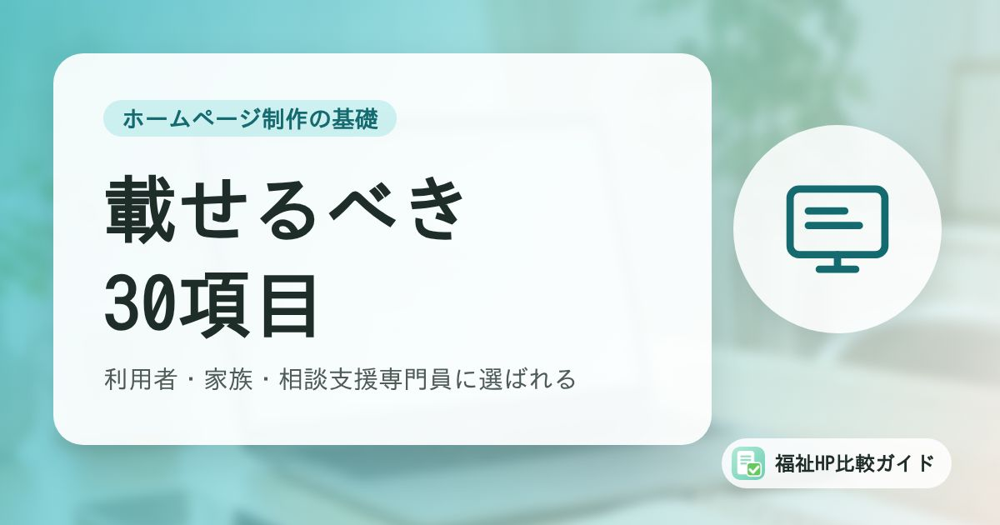

福祉事業所のホームページに載せるべき項目チェックリスト｜利用者・家族・相談支援専門員に選ばれる30項目

ホームページを作るとき、「何を載せればいいのか」で手が止まってしまうことは少なくありません。この記事では、福祉事業所のホームページに載せたい項目を30のチェックリストにまとめました。新しく作るときだけでなく、今のホームページの見直しにも使えます。
この記事でわかること
- ホームページを見るのは「利用者・家族」「相談支援専門員」「求職者」「行政」
- 基本情報からサービス内容、公表情報まで30項目のチェックリスト
- 小規模事業所向けのページ構成例
- 掲載するときに気をつけたい表現と写真の扱い
ホームページは誰が見ているのか
福祉事業所のホームページは、さまざまな立場の人に見られています。それぞれが知りたいことを意識すると、載せるべき内容が見えてきます。
| 見る人 | 主に知りたいこと |
|---|---|
| 利用を検討する本人 | どんな場所か、何をするのか、通えそうか、雰囲気は合いそうか |
| 家族 | 安心して任せられるか、費用はいくらか、送迎はあるか、職員はどんな人か |
| 相談支援専門員・医療機関のソーシャルワーカー | 対象者、定員、空き状況、支援の特色、連絡先 |
| 求職者 | 仕事内容、給与・待遇、職場の雰囲気、働き方 |
| 行政・関係機関 | 運営法人、事業所番号、公表情報、運営規程の概要 |
載せるべき30項目チェックリスト
基本情報（8項目）
| No. | 項目 | ポイント |
|---|---|---|
| 1 | 事業所名（正式名称） | 指定を受けている名称と一致させる |
| 2 | サービスの種類（正式名称） | 「就労継続支援B型」「共同生活援助」など |
| 3 | 運営法人の名称・代表者 | 法人のホームページがあればリンクする |
| 4 | 所在地・地図 | Googleマップの埋め込み、最寄り駅からの道順 |
| 5 | 電話番号・受付時間 | スマートフォンからタップで発信できるように |
| 6 | 営業日・営業時間 | 祝日、長期休暇の扱いも |
| 7 | 定員 | 利用定員、居室数など |
| 8 | 事業所番号 | 行政や相談支援専門員が確認しやすくなる |
サービス内容（7項目）
| No. | 項目 | ポイント |
|---|---|---|
| 9 | 対象となる方 | 障害種別、年齢、手帳の有無などを平易に |
| 10 | 支援の特色・強み | 他の事業所との違いを具体的に |
| 11 | 活動・作業内容 | 写真つきで紹介 |
| 12 | 1日の流れ | 時間ごとのスケジュール |
| 13 | 年間行事・イベント | 季節の行事、外出など |
| 14 | 送迎の有無と範囲 | 対応エリア、時間帯 |
| 15 | 食事・設備 | 昼食の提供、バリアフリー設備など |
費用・利用方法（5項目）
| No. | 項目 | ポイント |
|---|---|---|
| 16 | 利用料の考え方 | 世帯所得に応じた負担上限など、制度の説明 |
| 17 | 実費の内訳 | 食費、家賃、光熱水費、日用品費など |
| 18 | 工賃・給与の実績（就労系） | 時点を明記して正確に |
| 19 | 利用開始までの流れ | 問い合わせ→見学→体験→契約のステップ |
| 20 | 空き状況 | 時点を明記し、こまめに更新 |
信頼・安心のための情報（6項目）
| No. | 項目 | ポイント |
|---|---|---|
| 21 | 職員の紹介 | 資格、経験、人柄が伝わるメッセージ |
| 22 | 代表者・管理者のあいさつ | 事業所をつくった思い、支援の方針 |
| 23 | 公表情報 | 支援プログラム、評価結果、重要事項、運営規程の概要 |
| 24 | 苦情・相談窓口 | 担当者、第三者委員、外部の窓口 |
| 25 | 虐待防止・感染症対策・BCPの取組 | 委員会や研修の実施状況 |
| 26 | プライバシーポリシー | 個人情報の取り扱い |
問い合わせ・採用・更新（4項目）
| No. | 項目 | ポイント |
|---|---|---|
| 27 | 問い合わせ・見学申込みフォーム | 入力項目は必要最小限に |
| 28 | よくある質問 | 電話でよく聞かれる質問を掲載 |
| 29 | 採用情報 | 募集職種、条件、応募方法 |
| 30 | お知らせ・ブログ | 定期的な更新で「活動している事業所」であることを伝える |
公表情報の詳細は「障害福祉事業所がホームページ等で公表すべき情報まとめ」、フォームの注意点は「問い合わせフォームと個人情報保護」で解説しています。
小規模事業所向けのページ構成例
1つの事業所を紹介するホームページであれば、次の7〜8ページ程度の構成が基本になります。
- トップページ：事業所の特色、空き状況、見学の案内、お知らせ
- 事業所について：代表あいさつ、支援の方針、職員紹介
- サービス内容：対象者、活動内容、1日の流れ、年間行事
- ご利用案内：費用、利用開始までの流れ、よくある質問
- 事業所概要・アクセス：基本情報、地図、送迎範囲
- 公表情報：支援プログラム、評価結果、重要事項など
- 採用情報：募集要項、職員の声
- お問い合わせ：フォーム、電話番号
トップページの最初の画面が大切
スマートフォンで見たとき、最初の画面で「何の事業所か」「どこにあるか」「どうすれば見学できるか」がわかるようにしましょう。サービス名と地域名（例：「◯◯市の就労継続支援B型」）を見出しに入れると、検索からの訪問にもつながりやすくなります。
掲載するときに気をつけたいこと
表現は正確に、誇張しない
「必ず就職できます」「どんな障害でも対応できます」といった断定的な表現は避けましょう。実績を載せる場合は、「令和7年度の就職者数◯名」のように時点と数字を正確に示します。
写真の掲載は同意を得て
利用者が写っている写真を掲載する場合は、必ず本人（必要に応じて家族）の同意を得ましょう。顔が写らない構図にする、後ろ姿や手元を撮るなどの工夫も有効です。
読みやすさ（アクセシビリティ）にも配慮する
文字の大きさ、色のコントラスト、画像の代替テキスト、わかりやすい言葉づかいなど、障害のある方や高齢の方にも読みやすいホームページを目指しましょう。詳しくは「改正障害者差別解消法とウェブアクセシビリティ」で解説しています。
まとめ
福祉事業所のホームページは、利用者・家族、相談支援専門員、求職者、行政など多くの人に見られています。基本情報、サービス内容、費用、公表情報、問い合わせ方法、採用情報をそろえ、それぞれが知りたい情報にすぐたどり着ける構成にすることが大切です。
まずは30項目のチェックリストで、今のホームページに足りない情報がないか確認してみてください。
よくある質問
1ページだけのホームページでも効果はありますか？
まずは事業所の存在と基本情報を伝えるという点で、1ページでも効果はあります。ただし、サービス内容、費用、1日の流れ、公表情報、採用情報などをすべて1ページに載せると読みにくくなります。開所直後は1ページで始め、情報が増えたらページを分けていくのも現実的な方法です。
利用者の声を載せてもよいですか？
本人の同意を得たうえで、個人が特定されない形で掲載するのであれば問題ありません。ただし、効果を過大に表現したり、特定の結果を保証するような書き方をしたりするのは避けましょう。掲載する場合は、いつ、どのような立場の方の声かを添えると誠実な印象になります。
法人のホームページと事業所のホームページは分けるべきですか？
複数の事業所を運営している場合は、法人サイトの中に事業所ごとのページを作る方法と、事業所ごとに独立したサイトを作る方法があります。管理のしやすさを重視するなら法人サイト内に、事業所ごとの特色や地域での検索を重視するなら、それぞれのページを充実させることが大切です。
参考資料・出典
制度・料金・統計は改定される場合があります。最新の内容は各出典の公式情報でご確認ください。